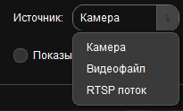
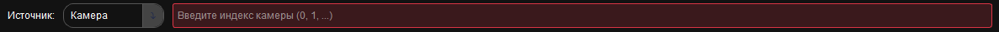
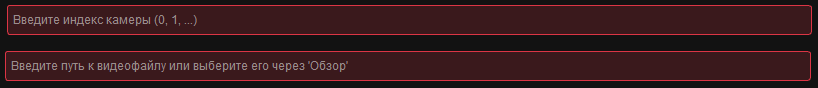

1. О программе
Программа PPEsv3.0 представляет собой инновационное решение для автоматического обнаружения Средств Индивидуальной Защиты (СИЗ) на производственных объектах в режиме реального времени.
Система обеспечивает:
- Контроль соблюдения норм безопасности персоналом
- Снижение производственного травматизма
- Автоматизированный мониторинг использования защитного оборудования
Основные функции
- Многофункциональное обнаружение: автоматическое распознавание касок, очков, перчаток, спецодежды и других СИЗ
- Мультиплатформенность: работа с веб-камерами, видеофайлами и RTSP-потоками
- Визуализация: отображение результатов с цветовой индикацией
Технологии
- Компьютерное зрение: OpenCV, YOLOv11
- Машинное обучение: Собственные модели
- Интерфейс: PyQt6 с адаптивным дизайном
- Ядро системы: Python 3.8.0
2. Начало работы
2.1 Запуск программы
Для запуска программы выполните следующие действия:
- Откройте командную строку/терминал в папке с программой
- Выполните команду:
python main.py
После непродолжительной загрузки откроется главное окно приложения (рисунок 1).

Рисунок 1 – Главный интерфейс PPEsv3.0
2.2 Выбор источника видео
В левой нижней части интерфейса расположен блок выбора источника видеоданных (рисунок 2):

Рисунок 2 – Меню выбора источника видео
Доступные варианты:
- Камера - подключение к веб-камере или IP-камере (рисунок 3)

Рисунок 3 – Источник камера
- Видеофайл - анализ предварительно записанного видео (рисунок 4)

Рисунок 4 – Источник Видеофайл
- RTSP поток - работа с сетевыми камерами через RTSP-протокол (рисунок 5)

Рисунок 5 – Источник RTSP поток
Предупреждение: Укажите параметры источника: индекс камеры или путь к файлу (рисунок 6).

Рисунок 6 – Параметры источников
3. Работа с моделями обнаружения
3.1 Выбор модели
Для выбора модели обнаружения (рисунок 7):
- Раскройте выпадающий список "Модель"
- Выберите нужную модель из доступных вариантов
- Нажмите кнопку Активировать

Рисунок 7 – Панель выбора модели обнаружения
3.2 Управление моделями
Для расширенного управления моделями:
- Нажмите кнопку Управление моделями
- В открывшемся окне используйте кнопки (рисунок 8):

Рисунок 8 – Окно «Управление моделями»
- Добавить - открывает новое окно «Добавить модель» для добавления обученной модели в программу, путь к модели задаётся через встроенный проводник в системе, название и комментарий задаются пользователем (рисунок 9)

Рисунок 9 – Окно «Добавить модель»
- Изменить - для работоспособности кнопки, нужно выбрать модель в таблице (нажав на неё левой кнопкой мыши), после чего откроется окно «Изменить модель» в котором можно изменить название и комментарий к модели (рисунок 10)

Рисунок 10 – Окно «Изменить модель»
- Удалить - для работоспособности кнопки, нужно выбрать модель в таблице (нажав на неё левой кнопкой мыши), после чего откроется окно для подтверждения удаления модели (рисунок 11)

Рисунок 11 – Окно «Подтверждение»
Важно: Для добавления модели необходимы два файла: .pt (веса модели) и .yaml (конфигурация).
4. Работа с RTSP потоками
4.1 Управление RTSP потоками
Для расширенного управления потоками:
- Нажмите кнопку Управление RTSP потоками
- В открывшемся окне используйте кнопки (рисунок 12):

Рисунок 12 – Окно «Управление RTSP потоками»
- Добавить - открывает новое окно «Добавить новый RTSP поток» для добавления потока необходимо указать, название потока, URL потока, комментарий и привязать модель из выпадающего списка (рисунок 13)

Рисунок 13 – Окно «Добавить новый RTSP поток»
- Изменить - для работоспособности кнопки, нужно выбрать поток в таблице (нажав на неё левой кнопкой мыши), после чего откроется окно «Изменить RTSP поток» в котором можно изменить название, URL, комментарий и привязанную модель (рисунок 14)

Рисунок 14 – Окно «Изменить RTSP поток»
- Удалить - для работоспособности кнопки, нужно выбрать поток в таблице (нажав на неё левой кнопкой мыши), после чего откроется окно для подтверждения удаления (рисунок 15)

Рисунок 15 – Окно «Подтверждение»
5. Запуск анализа видео
5.1 Настройка параметров
Перед запуском анализа и во время работы доступна следующая настройка:
- Отображение/скрытие ключевых точек обнаружения
5.2 Запуск и остановка анализа
Процесс работы с различными источниками:
Для камеры и видеофайлов:
- Нажмите Активировать
- После активации кнопка Запустить анализ станет доступной
- Для остановки нажмите кнопку еще раз (она изменится на Остановить)
Для RTSP-потоков:
Если поток настроен правильно, кнопка Запустить анализ будет доступна сразу.
Рекомендация: Для RTSP-потоков предварительно настройте их через меню "Управление RTSP" для удобного доступа.
6. Интерпретация результатов
Система предоставляет несколько способов отображения результатов (рисунок 16):
Визуальные индикаторы
- Зеленые рамки - СИЗ обнаружены и соответствуют требованиям
- Красные рамки - СИЗ отсутствуют или надеты неправильно

Рисунок 16 – Визуализация результатов обнаружения СИЗ
Текстовые уведомления
В нижней части интерфейса отображаются статусные сообщения о текущем состоянии:
- "СИЗ обнаружены: каска, очки"
- "Внимание: отсутствуют защитные перчатки"
- "Нарушение: каска надета неправильно"
7. Решение проблем
7.1 Частые проблемы и решения
- Проблема: "Не удаётся загрузить модель"
Решение: Проверьте, что файлы .pt и .yaml находятся в указанной папке и не повреждены.
- Проблема: "Не удаётся подключиться к камере"
Решение: Проверьте правильность индекса камеры и её подключение к компьютеру.
- Проблема: "RTSP-поток не воспроизводится"
Решение: Убедитесь в правильности URL и авторизационных данных.
Важно для корректной работы:
- Убедитесь, что выбранная модель активирована
- Проверьте подключение камеры или доступность видеофайла
- Для RTSP-потоков убедитесь в правильности авторизационных данных